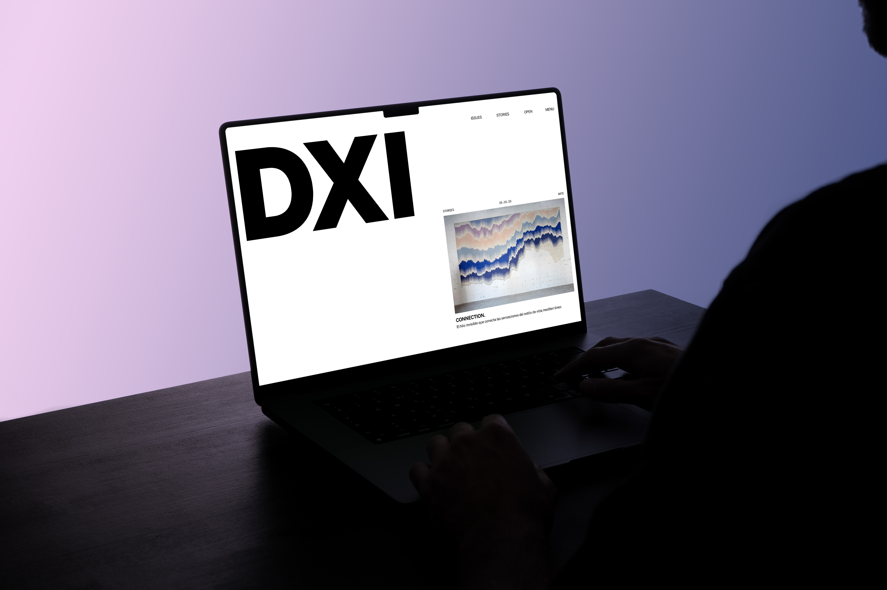
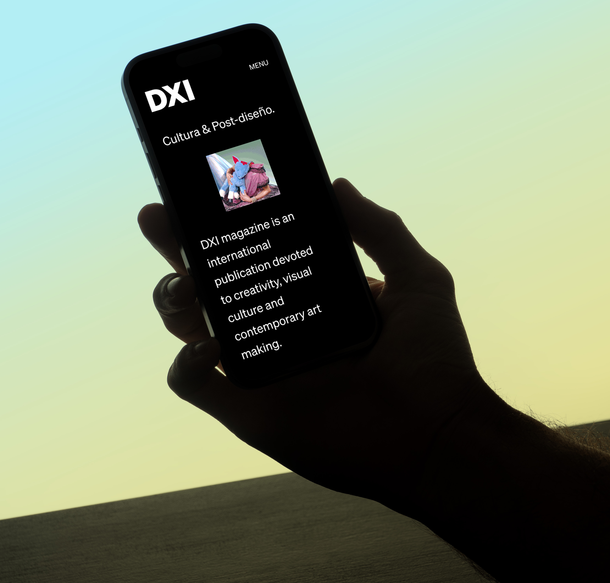
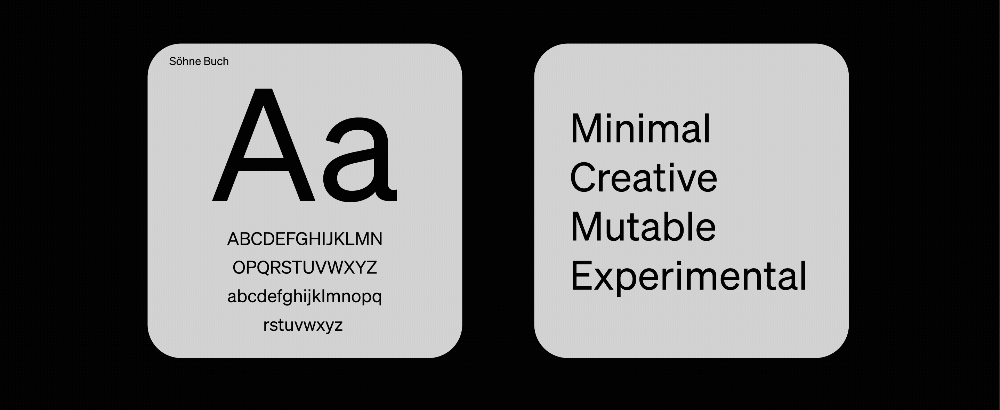
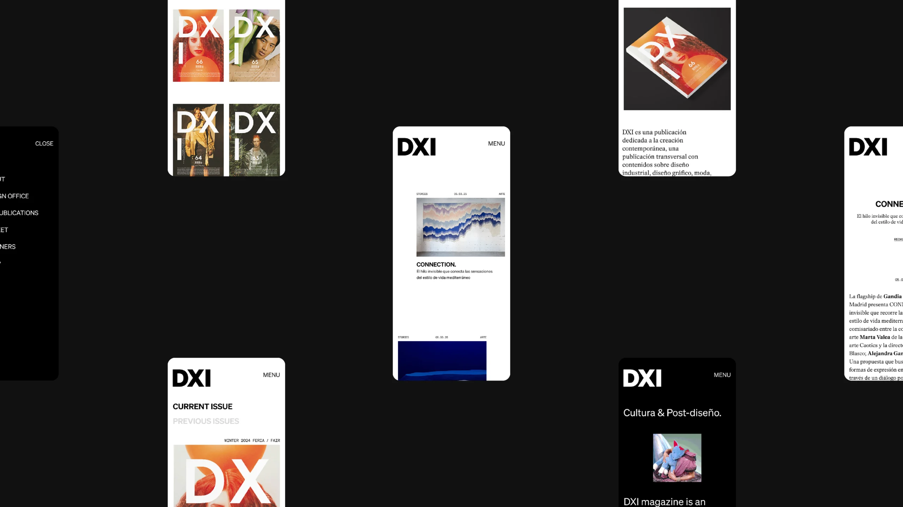

UI | UX por Cecília Cartaxo
2025
SOBRE / ABOUT
Trabalhei no redesign do site da DXI Magazine, uma publicação internacional focada em criatividade e cultura visual. Fundada em Valência, na Espanha, em 2000, a DXI é uma plataforma experimental que oferece uma perspectiva independente sobre a cultura contemporânea, com uma forte abordagem gráfica fundamentada no design.
Além de sua edição impressa, a DXI possui uma presença digital ativa, publicando diariamente notícias e artigos culturais. O redesign do site foi desenvolvido através de um processo estruturado que incluiu a análise da plataforma existente, pesquisa de publicações similares, definição de uma nova arquitetura de informação e o desenvolvimento do design visual da interface.
I worked on the redesign of the DXI Magazine website, an international publication focused on creativity and visual culture. Founded in Valencia, Spain, in 2000, DXI is an experimental platform offering an independent perspective on contemporary culture, with a strong graphic approach rooted in design.
In addition to its print edition, DXI maintains an active digital presence, publishing daily cultural news and articles. The website redesign followed a structured process, including an analysis of the existing platform, research into similar publications, the definition of a new information architecture, and the development of the visual interface design.


